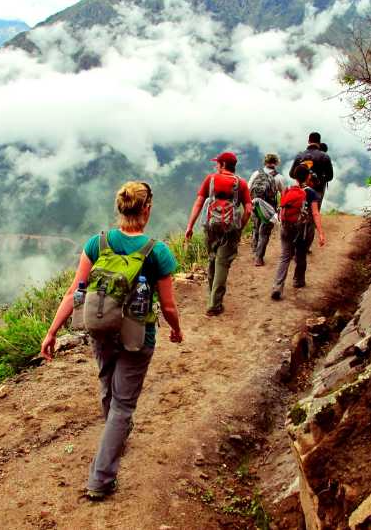

atractivo turistico
cañon del colca
El Cañón del Colca, es el cañón que divide el valle del mismo nombre que se ubica en la provincia de Caylloma en Arequipa. Este cañón es considerado, el segundo más profundo del mundo.
Reservar